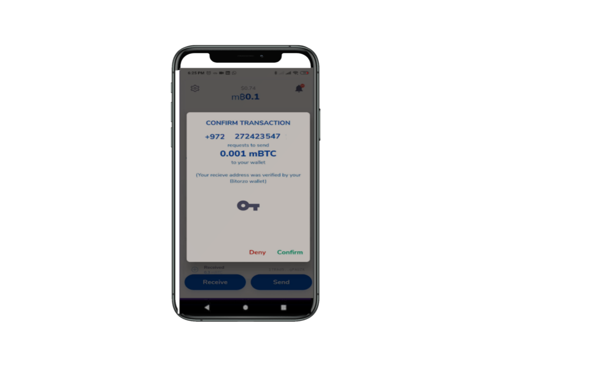

Bitorzo Bitcoin Wallet
Say "hello" to a different Bitcoin Wallet experience. An unexpected focus on privacy, combined with all of the features you expect.
 
Say "hello" to a different Bitcoin Wallet experience. An unexpected focus on privacy, combined with all of the features you expect.
Explore below to see why Bitorzo is a simple, powerful, and secure messenger
Access and Explore Lightning ready services and start participating on the new layer for payments.
You can use our hosted Lightning wallets or connect to your own node. Allows you to seamlessly use the Lightning Network, without the need to open channels, be online or operate and mantain a node. Our goal is to remove friction and provide a great user experience.
Allows you to have an easier interaction with services that support LNurl. Pay and Withdraw.
Receive instant payments. Generate invoices that can be easily shared.